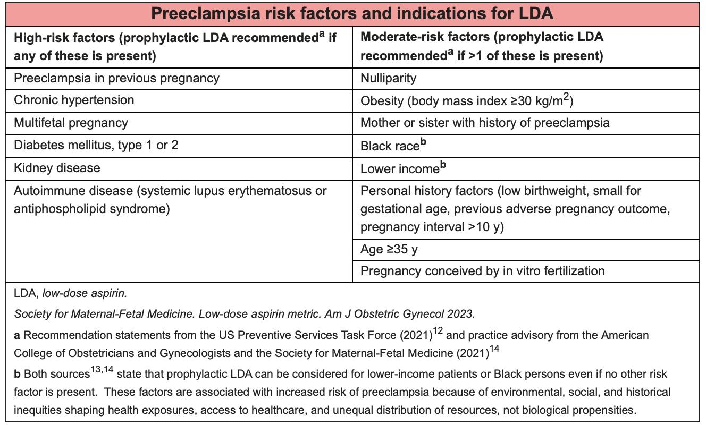

PREECLAMPSIA
1. Quick Review of Preeclampsia
- Initially presented as high blood pressure + proteins in urine.
- Later versions: headache case, abdominal pain case.
- Always consider preeclampsia questions in any lady in 2nd or 3rd trimester because it can give all symptoms.
2. Hypertension in Pregnancy
- Same definition: BP > 140/90.
- Must confirm with repeat readings on different days.
3. Types of Hypertensive Disorders in Pregnancy
Only three to remember:
- Preeclampsia
- Gestational hypertension
- New-onset hypertension after 20 weeks.
- No proteinuria, no organ involvement.
- New-onset hypertension after 20 weeks.
- Chronic hypertension
- BP starts before 20 weeks or pre-existing.
5. Severe Hypertension Definition
- Severe if BP > 160/110.
- Needs acute management due to maternal risk.
- Two essential numbers to memorise:
- Hypertension: > 140/90
- Severe hypertension: > 160/110
- Hypertension: > 140/90
6. Superimposed Preeclampsia
- Preeclampsia features added onto chronic hypertension or pre-existing renal disease.
- Still called preeclampsia.
7. Preeclampsia Overview
- Multisystem disorder.
- Not just high BP → organ involvement begins.
- Key organ involvement:
- Kidneys → proteinuria. (Most imp)
- Liver → raised liver enzymes.
- Hematologic → thrombocytopenia.
- Neurological → seizures (eclampsia most concerning). Hyperreflexia & Clonus, headache and visual disturbances
- Respiratory + cardiovascular → pulmonary edema → SOB.
- Placental dysfunction → IUGR, oligohydramnios.
- Kidneys → proteinuria. (Most imp)
- HELLP = variant of preeclampsia:
- Hemolysis
- Elevated liver enzymes
- Low platelets
- Hemolysis
8. Assessment When a Woman Has New-Onset Hypertension
- Always ask for signs/symptoms of preeclampsia.
- Identify type of hypertensive disorder.
- Look for severe features/red flags.
- If concerns for fetal well-being or severe hypertension → urgent admission.
9. Red Flags of Preeclampsia
- Headache
- Neurological irritability / agitation
- Vision problems
- Epigastric pain
- Chest pain
- Dyspnea
- Nausea/vomiting
If present → urgent admission (risk of progression to eclampsia).
10. Investigations
- Full blood examination (platelets, Hb)
- Kidney function: UEC, creatinine, EGFR, urine CR
- Liver function test
- Down the track: urine ACR
- CTG for fetal well-being
- Non-reassuring CTG/non-stress test → concern.
11. Screening for Risk of Preeclampsia

- Used for prophylaxis with aspirin.
- Also used in AMA, obesity, or if ≥2 moderate risk factors.
12. Management Framework
A. Stable Hypertension (chronic, gestational, stable non-severe preeclampsia)
- Same management for all.
- Bring BP down.
- Non-severe = 140/90 to 160/110.
- Oral agents:
- Labetalol
- Methyldopa
- Nifedipine OR hydralazine
- Labetalol
- Goal BP: < 135/85
B. Severe Hypertension in Preeclampsia
- Same treatment aim but use IV agents.
- Need rapid BP control.
- IV labetalol, IV hydralazine, oral immediate-release nifedipine.
- Key drug to remember: IV labetalol.
13. Definitive Management of Preeclampsia
- Preeclampsia is progressive; want to prevent eclampsia.
- Definitive treatment = deliver the baby (stop pregnancy).
- If >37 weeks → initiate birth plan within 48 hours.
- <37 weeks → depends on maternal and fetal indications.
- Non-reassuring CTG → deliver.
- Use:
- Corticosteroids
- Magnesium sulfate
- Corticosteroids
14. Magnesium Sulfate
- For preeclampsia <30 weeks → strongly recommended (fetal neuroprotection).
- Between 30–34 weeks → individualized decision.
- In eclampsia, treatment is:
- Loading dose magnesium sulfate of 4g
- Maintenance 1 g/hr for 24 hours
- Loading dose magnesium sulfate of 4g
15. Corticosteroids
- Use if planning delivery <34–35 weeks.
- Not used ≥35 weeks (lungs already mature).
16. Red Flags Revisited
- In preeclampsia cases, BP + proteinuria are already given.
- Your main job = look for deterioration/red flags:
- Neurological features → vision problems, headaches
- Shortness of breath
- Platelet issues (via investigations)
- Liver features → abdominal pain, jaundice
- Non-reassuring CTG → plan for delivery
- Neurological features → vision problems, headaches
17. Summary of Symptoms of Preeclampsia
- High BP + proteinuria (first criteria)
- Abdominal pain (general, RUQ, epigastric)
- Neurological → headache, blurring of vision, confusion, seizures
- Shortness of breath
- Oliguria
- Edema (but physiologic edema in pregnancy is common)
- Risks: placental abruption and others
18. Physical Examination Key Points
- BP + urine protein usually provided.
- Neurological examinations:
- Fundoscopy (papilledema)
- Hyperreflexia
- Clonus (most important)
- Liver examination
- Leopold’s maneuver
- Fetal heart rate
- Edema
- Respiratory exam (pulmonary edema)
- Cardiovascular exam
19. Differentials for Preeclampsia Case
- Other hypertensive disorders:
- Chronic hypertension
- Gestational hypertension
- Chronic hypertension
- Acute kidney injury
- HELLP syndrome
- Acute fatty liver of pregnancy
- SLE
- Antiphospholipid antibody syndrome
Your next patient is a 30 year old lady who is 36 weeks pregnant and has presented to you for her antenatal visit. She has had an uneventful pregnancy with all antenatal screening being normal. Last week she developed a mild swelling of her legs. The baby is kicking well.
Physical examination has been done:
BP 155/95 on two readings, Urine protein 3+
FHR, Fetal lie, Fundal height normal
Task:
• Take relevant history
• Explain ( Do ) Relevant physical examination and mention the instruments you will be using
• Explain your diagnosis
History taking
- Step number one: make sure she's stable — tell me the vital signs (blood pressure, pulse rate, respiratory rate; saturation or temperature not required here).
- Sit down, introduce yourself and use standard open-ended question: "How can I help you today?"
- Patient complaint: swelling in legs + told blood pressure is high; patient is 36 weeks pregnant.
- Phrase to patient: "I understand your concern... let me just ask you a few questions. We'll figure out what is going on together, and I'll make the best management plan for you."
Explore the complaint (swelling)
- Timing: When did this swelling start? Is it getting worse?
- Characteristics: Up to which level does the swelling extend to?
- Red flag question: Is the swelling present in the morning? (swelling in the morning = concerning)
- Optional: one side vs both sides
Key points / preeclampsia red flags (ask early)
- Neurological symptoms (top of the list — do not miss): any headache, blurring of vision, dizziness.
- Liver involvement cluster: abdominal pain, nausea, vomiting, yellowish discoloration.
- Cardiopulmonary: any chest pain or shortness of breath.
- HELP/platelet issues: any rashes or bruises (ecchymosis).
- Oliguria: Have you noticed a decrease in the amount of urine you are passing? (lower priority but important)
Other relevant questions
- OB complications: any vaginal bleeding? any vaginal discharge or leaking of fluid?
- Previous history: any previous history of high blood pressures or kidney disease (before pregnancy or in previous pregnancies)
OB / antenatal history (if not given in stem)
- Were your routine pregnancy bloods at the beginning done and normal?
- Did you have a dating scan?
- Down syndrome screening?
- Morphology scan / ultrasound at 18–20 weeks?
- "Sweet drink" test at 26–28 weeks?
- Swab test at 36 weeks?
- Is your baby kicking?
- Previous pregnancies: any complications during pregnancy or delivery
Physical examination (PFE)
- General appearance: level of consciousness — alert or drowsy?
- Rashes / ecchymosis (for HELLP).
- jaundice
- Vitals (if not already done).
- Neurological examination (first system):
- Fundoscopy — any problems / papilledema.
- Reflexes / hyperreflexia.
- Clonus — check at the ankle (most obvious site).
- Fundoscopy — any problems / papilledema.
- Cardiovascular / respiratory (quick):
- Cardiac: S1/S2 normal? any murmurs or added sounds?
- Respiratory: air entry equal? any added sounds?
- Cardiac: S1/S2 normal? any murmurs or added sounds?
- Abdominal examination:
- Check for tenderness on the liver and on the uterus.
- Do a Leopold's - key points to note: fundal height and fetal heart rate (do not focus on lie/presentation).
- Lower limb examination for edema — pitting vs non-pitting if examiner asks.
- Urine dipstick is important (often already in the stem).
- Check for tenderness on the liver and on the uterus.
Diagnosis (history + exam findings)
- History: family history (mother had high BP, sister had preeclampsia); patient has headache, leg swelling for a week, getting worse up to knees; no previous hypertension or kidney disease.
- Typical physical findings: clonus positive, hyperreflexia positive; fundoscopy sometimes shows papilledema but clonus/hyperreflexia common.
- Explain to patient (simple words):
- "Most likely you are having a condition called preeclampsia. This is a condition in pregnancy which involves multiple organs and causes a high blood pressure and your kidneys leak protein."
- Concern: progression to eclampsia — involves the brain and causes seizures; main aim is to prevent that.
- "Most likely you are having a condition called preeclampsia. This is a condition in pregnancy which involves multiple organs and causes a high blood pressure and your kidneys leak protein."
Differentials (as taught)
- Gestational hypertension — standalone high BP in pregnancy with no kidney involvement.
- Chronic hypertension — pre-existing high BP before pregnancy or in early pregnancy.
- Acute kidney injury.
- HELP syndrome (liver and blood cell involvement).
- Lupus / antiphospholipid antibody.
- Acute fatty liver of pregnancy.
Investigations (key list)
- Investigation often missed / top of the list in lecture wording: "full blood examination, ESR, CRP, UEC" and "please do not forget your CTG."
- CTG (cardiotocograph) — check fetal heart rate / fetal well-being (very important; many miss CTG).
- Ultrasound — assess amniotic fluid index and fetal growth.
- Full blood examination (for HELLP — platelets / hemolysis).
- Liver function tests (LFTs).
- Kidney tests: urea, electrolytes, creatinine and calculate eGFR.
- Urine protein (dipstick / protein) — optional but acceptable.
Management
- Severe hypertension (BP >160/110): emergency department — IV labetalol (intravenous medication) to bring down BP.
- Non-severe hypertension: start oral medication today — options taught: "labetalol, methyl dopa" (or nifedipine or hydralazine).
- Treatment goal: keep BP under 135/85.
- Final treatment = delivery — plan delivery after 37 weeks if everything is fine (case discussed ~36 weeks; plan soon).
- Red flags for patients to monitor: worsening headache, vomiting, dizziness, blurring of vision, vaginal bleeding — come to ED if these occur.
- If the situation worsens (BP increases despite medication, symptoms worsen, or seizure) → induced labor or caesarean section and deliver the baby ASAP.
- Corticosteroids: No at 36 weeks in this case; consider if <34 weeks.